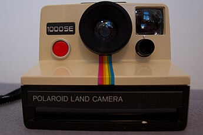

Instagram
El desarrollo de Instagram se inició en San Francisco, cuando
Kevin Systrom y Mike Krieger optaron por centrar sus múltiples
funciones HTML5 check-in Burbn en un proyecto de fotografía móvil.
El producto fue lanzado en el Apple App Store el 6 de octubre de 2010.
Poco después del lanzamiento, Josh Riedel se unió al equipo como gerente
de la comunidad. Shayne Sweeney se unió en noviembre de 2010 como ingeniero
y Jessica Zollman fue contratada como encargada de promoción en agosto de 2011.
En el mes de enero de 2011, Instagram añadió hashtags para ayudar a los usuarios a
descubrir las fotos que los demás compartían sobre un mismo tema. Animaba así a sus
usuarios a añadir hashtags relevantes y específicos, en lugar de etiquetar palabras
como foto con el objetivo de hacer las fotografías más populares, atraer a un mayor
número de fanáticos y conseguir más me gusta.
El primer icono de Instagram fue diseñado por el CEO y cofundador de la plataforma,
Kevin Systrom. Estaba inspirado en la Polaroid vintage y presentaba una cámara con
una franja de arcoíris.
En 2010, se lanzó una segunda versión del logotipo que era similar al original, pero
con algunos ajustes. Aunque el aspecto general seguía siendo el mismo, a Cole Rise se
le ocurrió una imagen más minimalista inspirada en una cámara Bell & Howell de la década de 1950.

Continuara...
Regresar al menú